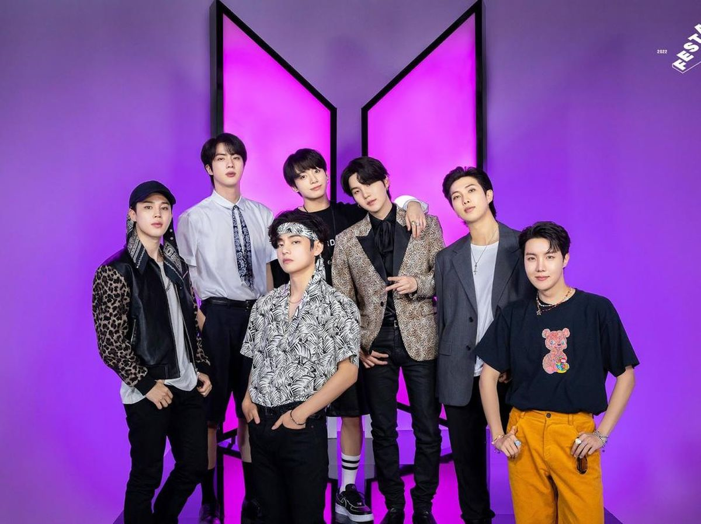

Jeon Jung-kook (bahasa Korea: 전정국, lahir 1 September 1997) atau lebih dikenal dengan mononimnya sebagai Jungkook, adalah seorang penyanyi dan penari asal Korea Selatan. Ia merupakan seorang anggota dari grup vokal pria BTS, dengan posisinya sebagai vokalis dan penari utama. Jungkook pada Agustus 2021
Jimin
Jimin lahir di Geumsa-dong, Distrik Geumjeong, Busan, Korea Selatan pada tanggal 13 Oktober 1995. Ia merupakan anak pertama dari dua bersaudara. Saat SMP, Jimin adalah siswa yang pintar dan selalu menjadi ketua kelas.
Taehyung
Kim Tae-hyung (bahasa Korea: 김태형, lahir 30 Desember 1995) atau lebih dikenal sebagai V adalah seorang penyanyi, penulis lagu, dan pemeran asal Korea Selatan. Ia merupakan anggota dari grup vokal pria BTS, yang dikelola oleh Big Hit Music.
Suga
Min Yoon-gi (bahasa Korea: 민윤기, lahir 9 Maret 1993) atau lebih dikenal sebagai Suga, adalah seorang penyanyi rap, penulis lagu, dan produser rekaman asal Korea Selatan. Suga merupakan anggota dari grup vokal pria BTS, yang dikelola oleh Big Hit Music.
Ada 7 Member
Jungkook, Jimin, Jin, Suga, RM, Taehyung, Jhope

Boyband asal Korea Selatan
BTS (방탄소년단) terdiri dari 7 member: RM, Jin, Suga, J-Hope, Jimin, V dan Jungkook. BTS debut pada tanggal 13 Juni 2013, di bawah naungan Big Hit Entertainment, dengan single utama No More Dream di album 2 Cool 4 Skool.